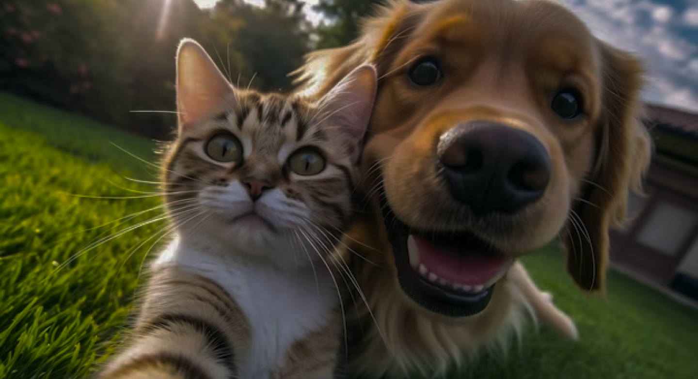

<main>
    
    <section>
        <div class="container text text-center ">
            <h1 class="phrase">
                Adoptar una mascota es más que el hecho de asumir una responsabilidad. 
                Es aprender a querer y a preocuparte por alguien más. 
                Tener un animal de compañía nos hace ser menos egoístas y nos enseña a dar lo mejor de nosotros, 
                por el bien de otro ser.
            </h1>
            <button class="btns">Quiero Adoptar</button>
        </div>

        <div class="statistics">
            

           

           

        </div>

        <div class="info">
            
            <h1 class="textBox">
                Cuando llegas a casa, no importa lo cansado o malhumorado que te encuentres, 
                ellos tienen la capacidad de hacerte sentir mejor y olvidarte por un rato de todos 
                tus problemas. Porque los animales que nos acompañan, siempre pueden hacernos sonreír.
            </h1>
        </div>
      
        <div class="activityAdop">
            <h1 class="titleA">Sino puedes adoptar, puedes ayudar de otras maneras</h1>
            <br>
             
            <div class="slider">
                <div class="images">
                    <input type="radio" name="slide" id="donations" checked>
                    <input type="radio" name="slide" id="voluntary">
                    <input type="radio" name="slide" id="temporaryHouse">

        
                    
                    
                    
                </div>
                <div class="dots">
                    <label for="donations"></label>
                    <label for="voluntary"></label>
                    <label for="temporaryHouse"></label>
                </div>

            </div>

        </div>

        <div class="animalsAdopt">
            <h1 class="titleA">Conoce algunos rescataditos en adopción</h1>

            <div class="card mb-3" style="max-width: 540px;">
                <div class="row g-0">
                  <div class="col-md-4">
                    
                  </div>
                  <div class="col-md-8">
                    <div class="card-body">
                      <h5 class="card-title">Card title</h5>
                      <p class="card-text">This is a wider card with supporting text below as a natural lead-in to additional content. This content is a little bit longer.</p>
                      <p class="card-text"><small class="text-body-secondary">Last updated 3 mins ago</small></p>
                    </div>
                  </div>
                </div>
              </div>
            


        </div>
       


    </section>


</main>
